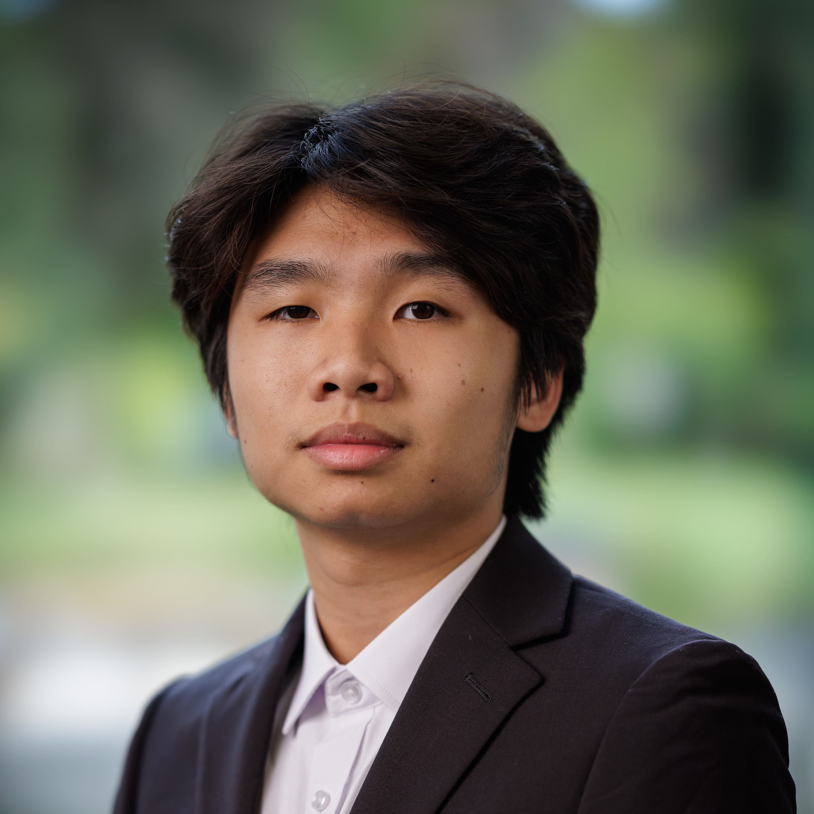

DongYu Weng
Physics & Computer Science @ Carleton College
I like figuring out how things work down to the raw physics and C code. Most of my time is spent oscillating between optics lab benches and low-level software design.
How I Work
I learn best by getting my hands dirty. I built a Scheme interpreter in C because I wanted to understand how code actually executes at memory level, and I put together a plastic granulator because I wanted to see how recycling machinery worked step-by-step. It usually means failing a few times before getting it right, which is half the fun.
Right now, I work with Professor Martha-Elizabeth Baylor studying light-sensitive plastics for optofluidic chips. Before this, I designed optics outreach demos for classrooms. If a project involves sitting at a computer and working at a lab bench in the same afternoon, I’m into it.
Research Experience
Integrated Optofluidic Devices
Sep 2026 – PresentResearch Assistant | Carleton College | Prof. Martha-Elizabeth Baylor
Optofluidic chips pair liquid micro-channels directly with optical light guides. I study the light-sensitive plastics (photopolymers) used to make them. My team and I build test setups to measure refractive index changes, stiffness, and optical loss across different polymer recipes.
The practical goal: build a clear material catalog so researchers can pick the right polymer—whether that's a flexible rubbery blend for wearable sensors or a durable glass-like blend for industrial tools.
Hands-On Optics Education Demos
Jan 2026 – Jun 2026Research Assistant | Carleton College | Prof. Martha-Elizabeth Baylor
Prototyped portable optics demonstrations designed for young students and public visitors. I focused on making lens and light refraction concepts intuitive through physical setups that needed zero technical explanation to start playing with.
Work Experience
Makerspace Manager
Sep 2024 – PresentCarleton College | Northfield, MN
- Help students design and build everything from simple vinyl stickers to custom micro-robotics.
- Train users on 3D printers, laser cutters, and hand tools while keeping equipment calibrated and running smoothly.
Physics Lab Assistant
Sep 2026 – PresentCarleton College | Northfield, MN
- Guide students through physics lab experiments, troubleshooting faulty sensor hookups, misaligned optical setups, and calculation errors.
- Walk students through underlying physical principles to help them build intuition for independent lab work.
Engineering Design Associate
May 2025 – Aug 2026Fuzhou Changhui Light Steel Structure Co. | Fuzhou, China
- Translated 2D structural schematics into detailed 3D CAD models to spot spatial conflicts early and improve design clarity.
- Worked alongside structural engineers to confirm specs met regional safety and load standards.
Data Analysis Intern
Mar 2024 – Jun 2024Office of the State Superintendent of Education | Washington, DC
- Analyzed district-wide attendance datasets to trace patterns in chronic absenteeism and presented findings in public stakeholder reports.
Barista
Jul 2023 – May 2024Luna Hall DC | Washington, DC
- Managed high-volume order rushes, crafted specialty beverages, and handled point-of-sale customer service in a fast-paced environment.
Certifications & Skills
Certifications
- Google: Cybersecurity | Advanced Data Analytics | IT Automation with Python
- Georgetown University: Cybersecurity: Protecting Our Digital Future
Languages & Tools
Selected Projects
Scheme Interpreter
A recursive parser and environment-model evaluator in C. Written ground-up to understand dynamic typing, scoping rules, and memory management.
Chaotic Oscillator Simulation
Simulated Asymmetric Coupled Duffing Oscillators in Python. Applied vectorized NumPy calculations to generate Poincaré sections and evaluate Permutation Entropy.
Custom PLA Granulator
Designed custom steel shredding blades in Fusion 360 and built an Arduino motor controller with stall detection to recycle 3D printing waste.
Resume
View or save a copy of my current resume.
Download PDF